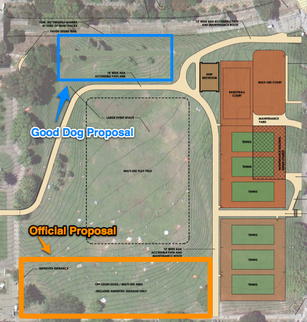

Come to the next open workshop this Thursday and let them know what you think. (Even if you disagree with me!)
The current Dolores Park plan has an off-leash area in the North-East corner of the park, directly atop Hipster Hill. This is arguably the worst possible place to have a dog area. Instead, we should put a dog area in the North-West corner, which would be safer, easier to maintain, and less likely to lead to conflicts.
(Note that there's also an official proposal for a dog area in the South Field. I think that's a great plan and I support it wholeheartedly. This document is just about dog areas in the NORTH field.)

The park is home to a diverse set of users.
These rules must provide for minimizing conflict between people doing different things at the same time.
We have an opportunity here, with the DP Renovation, to improve Dolores Park for everyone, dog owners and picknickers and kids and athelets and sunbathers and tourists and all. But we also have a risk -- if we make the wrong choices, we will make the park less fun for everybody.
What is a dog area? Basically it's two things:
So think of a dog area not as a boundary, but as a focus -- a point of attraction for a certain activity or group.
It makes no sense to put foci for two incompatible activities in the same spot. That's an inevitable recipe for conflict between two otherwise harmonious uses of the park.
Lindsay's motto for the park renovation has been, "More benches, no fences." Without a reasonable dog area, we will get the opposite.
Bigger is better
Separation, not segregation
Amenities are essential
Finally The biggest problem with that area is that it's already claimed by the hipsters! If we come out with plans that have paths or benches or boulders or dog fountains or even signs smack in the middle of the most trafficked, most used part of the park, then the conversation will immediately turn into a loud, public fight pitting dog owners against hipsters (with onlookers cheering and jeering at all parties).
Possibility for conflict: HIGH
Possibility for conflict: LOW
I propose we remove a section of the current sidewalk path (going from the Muni stop up the hill to the steps just north of the bridge). This will compensate for the addition of a 10' wide path right nearby by regaining green lawn.
The removal of the straight path will improve traffic through the park by encouraging strollers to meander along the ADA path.
If people want to walk, or jog, in a straight line along that side of the park, then they can hop across the bridge and walk along the path on the far side of the tracks. This area is being improved anyway; let's encourage people to use it.
Benches are very important for a dog area, and the current SW dog area points out (a) how well-used they are, and (b) how poorly placed benches can make a dog area worse. The benches are too close together, causing concentrated wear on the ground around the benches, and they face the wrong direction, forcing owners to crane their necks, and encouraging play on the uphill
A NW dog area should have benches facing the lawn and hill down to the soccer field. These benches would be appreciated and used by non-dog-owners too, just like the benches currently lining the path above the SW dog area.
Also, any dog area worth the name should have a fountain, both for dogs to drink and for owners to wash their dirty pets before leaving.
It is horrifying to imagine putting benches or fountains in the middle of hipster hill. Even if a fountain is placed outside the tennis court, it would be inconvenient for dogs playing 100' away on the lawn. And tennis players would likely not appreciate sharing a fountain with muddy slobbering dogs (another potential source of conflict).
More on benches: * dog area benches should face where the dogs play, and not be placed in the middle of a lawn * benches allow dog owners to chill out and supervise their dogs * benches also provide a "safe zone" where dogs can retreat when play gets too rough * benches should be spaced out enough that the abuse of the lawn around them is not multiplied
The NW dog area depends on a reliable fence between the muni tracks and the park. This is mandated by safety concerns anyway.
The ADA path will be downhill of the NW dog area, providing a natural boundary, as well as a retaining wall. It's not clear to me that any more fencing would be necessary or desirable between the hill and the path.
As an aside, I find it deeply amusing that the aerial map used to demonstrate the NE dog area shows several dozen picnic blankets laid out right inside the boundary, presumably occupied by sunbathers and couples who would not appreciate a dog playing fetch on top of them.
No; if you check the maps you'll see that the area allowing off-leash dogs on the north field is significantly reduced.
[find current RPD dog map too]
But, even though it is smaller, it is plenty big enough to provide some good ball-tossing and chasing space.
Maybe. But it's not much steeper than Hipster Hill. And the ADA path will require a retaining wall above it, which will level it out some. It's also possible to regrade it slightly while retaining its character.
That hill is a complete distaster. It's too steep to use, and if a person or a dog walks down it without slipping, they emerge on the dangerous muni tracks. In my opinion there needs to be a high wall lining the muni tunnel, with a fence to keep people from falling over. That would allow more flat space, and would be a great place to put some benches facing the field and the downtown skyline.
No, it's actually about the same distance from the edge of the flat field, and arguably encroaches less since it's separated by a slope and the ADA path.
Probably not. If you think about it, the current free-for-all system works pretty well.
Most conflicts I've seen have been between two dog owners; when a dog has bothered a human, the owner has been polite and got the dog out of there and the conflict was resolved amicably. But when two dog owners start yelling at each other, or a non-dog-owner feels threatened, that can escalate into a real aggressive conflict. (Not fun!)
Therefore it's essential that when a conflict arises, there is somewhere for the dog and owner to go.
I'm not telling anyone what they can't do. I'm sure that people will continue to walk their dogs all across the park, in the mornings, and rainy afternoons, as they do now without harm.
This proposal attempts to predict and react to a park which has been getting more and more users, and to design some practical guidelines for when there is a conflict.